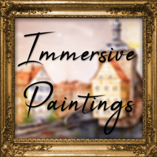

[IP] 沉浸画框 Immersive Paintings
共 4 个条目 · immersive_paintings
版本: 0.7.8 · 来源: immersive_paintings-neoforge-1.21.1-0.7.8.jar
Use your own paintings!
MC百科中文名: [IP] 沉浸画框
MC百科页面: https://www.mcmod.cn/class/6947.html（[IP] 沉浸画框 (ImmersivePaintings)）
官方介绍 （Modrinth · 中文版由 GLM AI 翻译，仅供参考）
受够了像素感过重、数量有限、又没有正经选择界面的原版画作吗？ Immersive Paintings 让你通过拖放、截图或输入 URL，创建属于自己的 Minecraft 风格画作。 无需资源包，多人游戏友好，简单易用。
本模组提供了一个简洁而强大的图形界面，用于选择你的画作、其他玩家的画作，或可选数据包提供的画作。还有默认数据包，助你快速上手！
创作菜单可以让你快速把图片像素化，并应用后期效果和抖动处理，使其看起来自然融入 Minecraft，几乎无需费心调整。
但再精美的画作，没有精美的画框也逊色几分？从多种样式和大量材质中挑选一款，让你的作品更加引人注目。
借助智能的细节分级（LOD）、缓存与数据懒加载流式传输，性能影响几乎察觉不到。
还有发光颜料版本可供使用！
你的图片带有透明区域？没问题，做成涂鸦（graffiti），喷到每一面墙上吧！
合成配方如下。
Joy of Painting 兼容！ 只要把画布往画作上一贴，即可展示！
服务器管理员须知
Immersive Paintings 需要传输和存储图片，在服务器上图片数量可能相当可观。如果你的服务器带宽不足或存储空间紧张，不妨看看 配置文件。 它允许对用户施加一些限制并对带宽进行节流，可按你的需求调整。
数据包
你还可以选择通过 数据包分享画作合集。
翻译
希望模组支持你的语言？欢迎到 Crowdin 帮忙翻译
Immersive Collection
附加组件
由 GLM AI 翻译，仅供参考
查看英文原文（Modrinth）
Tired of the overly pixelated, limited amount of paintings without a proper selection GUI? Immersive Paintings allows users to create their own, Minecraft-stylized paintings via drag and drop, screenshots, or by providing a URL. No resource pack required, Multiplayer friendly and easy to use.
The mod offers a simple yet powerful GUI to select your paintings, those from fellow players or those provided via optional datapacks. Default datapack available for a quick start!
The creation menu allows you to quickly pixelate your images and apply post-effects and dithering to make them look like they fit into Minecraft, without much fiddling around.
But what's a fancy painting without a fancy frame? Select from different styles and a lot of materials to put your artwork into a better focus.
Using smart level of details, caching and lazy streaming of data the performance impact is not noticeable.
Available with glowing paint as well!
Your image has transparency? No problem, use a graffiti and spray it on every wall!
And here is the crafting recipe.
Joy of Painting compatible! Just slap a canvas on a painting to showcase!
For Server Admins
Immersive Paintings has to transfer and store images, on a server they may get quite a lot. If your server suffers from low bandwidth, or storage space, take a look at the config file. It allows a few limitations for users and bandwidth throttling to adjust to your need.
Datapacks
Optionally, share packs of paintings using datapacks.
Translations
You would like to have the mod in your language? Help translate the mod on Crowdin
Immersive Collection
Addons
资料来源：Immersive Paintings